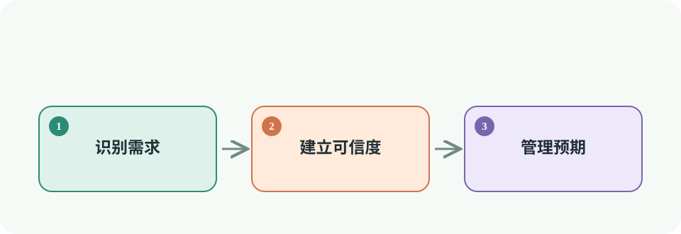
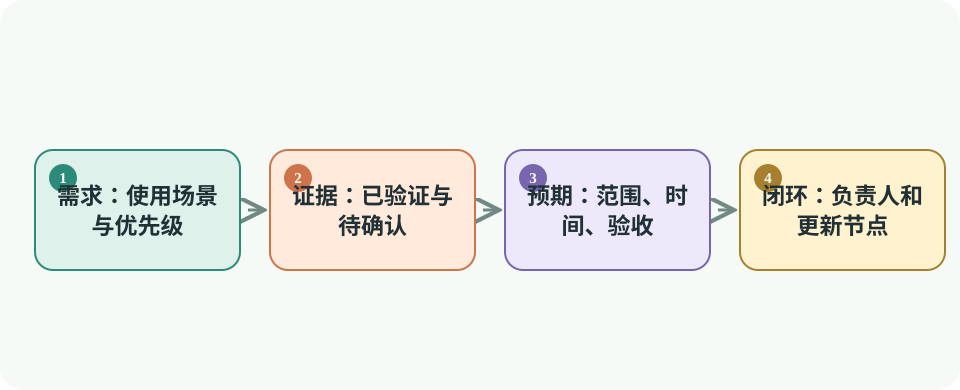

客户沟通：用证据管理需求与预期
把“能不能做”拆成范围、标准、风险、时间与责任
01 · 从一个具体问题开始
客户问“什么时候能交付”，表面上是问日期，背后可能是资源安排、内部审批、上线窗口或业务风险。只报一个日期，未必真正回应客户的需要。
先澄清使用场景与成功标准，再用证据区分已完成、待验证和不确定，最后把范围、时间、验收和变更方式确认下来。
02 · 把方法拆成可观察的动作
在朋友关系与客户合作中，识别真实需求、回应方式和承诺边界。 这些动作是教学工具，不是必须逐字套用的公式。

识别需求
先问具体使用场景、成功标准、最优先顾虑和决策人。
建立可信度
以证据区别已验证能力、可能方案和尚不确定的信息。
管理预期
确认范围、时间、成本、验收标准与变更流程，书面复述。
03 · 多轮案例：回应怎样随着信息推进
进度沟通案例展示如何回应“能给个明确时间吗”，同时避免给出没有依据的日期。
客户询问项目进度
核心功能已经完成，剩余内容仍在测试；客户需要安排内部工作。
沟通目标：发送带负责人和日期的进度表。
现在做得怎么样了？
目前核心功能已经完成，剩下的内容正在测试。最终交付日期还需要结合测试结果复核，我今天发您更新版进度表。
能给个明确时间吗？
您需要明确时间来安排内部工作，我理解。与其给一个可能失准的日期，我会区分已确认里程碑和待测试确认，并标注最迟更新时间。
示范回应用于观察结构，不是唯一正确答案。真实沟通应根据事实、关系和风险调整。

04 · 交互拆解：逐步检查每个动作
选择一个动作，观察它解决的具体问题。所有步骤默认都在页面中可读；按钮只是帮助你聚焦其中一层。
怎样把沟通原则变成下一句话
识别需求
先问具体使用场景、成功标准、最优先顾虑和决策人。
检查点：这一轮是否回应了对方刚刚提出的具体问题？
建立可信度
以证据区别已验证能力、可能方案和尚不确定的信息。
检查点：这一轮是否回应了对方刚刚提出的具体问题？
管理预期
确认范围、时间、成本、验收标准与变更流程，书面复述。
检查点：这一轮是否回应了对方刚刚提出的具体问题？
当前聚焦第 1 步。
05 · 常见失误与适用边界
- 把客户的催促理解成不信任，而不问背后的业务安排。
- 将开发完成、测试完成和验收通过混为一谈。
- 承诺无法控制的交付日期，或把未验收写成已验收。
任何沟通框架都不能替代事实核查、正式流程、法律意见或现实安全判断。遇到不确定信息，应明确说出未知并约定核验方式。
06 · 把文章变成一次练习
用一个交付案例写出三栏：已经确认、仍待验证、需要客户决定；最后补上负责人和下一次更新日期。
客户询问项目进度
在训练页打开这道案例，先隐藏参考、逐轮作答，再做四维自评。
07 · 来源与说明
本文区分外部框架、项目教学改编和案例示范。引用只支持来源中明确涉及的概念，不代表本文所有表达步骤均经过实验验证。
- Harvard Program on Negotiation · Principled Negotiation · https://www.pon.harvard.edu/daily/negotiation-skills-daily/principled-negotiation-focus-interests-create-value/（Focus on interests and create value）
本文的案例、步骤顺序、互动拆解和四维自评属于言习课程设计。项目自评用于个人纵向复盘，不是经心理测量验证的量表，也不是任何机构的认证课程。